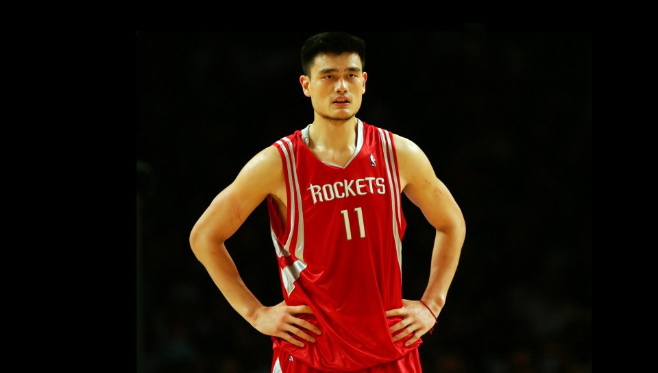
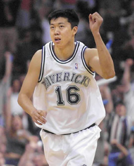
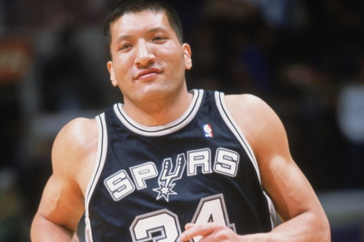
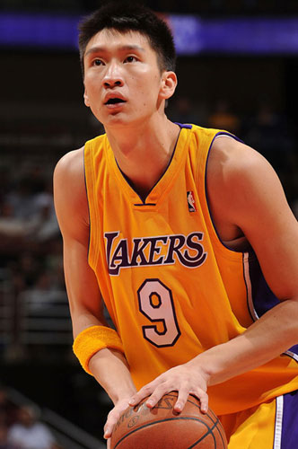

姚明
目录：
返回顶部球星介绍NBA生涯
2002年，他以状元秀身份被NBA的休斯敦火箭队选中 。
2003年10月1日，他率领中国男篮拿到亚锦赛冠军，同时获得雅典奥运会入场券。
2004年2月23日，对阵老鹰队获得职业生涯单场得分最高41分和最高助攻7次。
2005年3月11日，对阵太阳队得到职业生涯单场最高篮板22个。
2006年11月14日，对阵马刺获得职业生涯最高抢断次数4次。12月16日，对阵湖人获得职业生涯最高盖帽8个。
2009年1月18日，对阵热火12投12中拿到26分。2009年3月14日，对阵山猫投中赛季第1个3分。2009年4月19日，对阵开拓者姚明在24分钟内9投9中得到24分。5月5日，对阵湖人的西部半决赛第一场中受伤，但经过调整后执意冲回赛场，并最终带领火箭取得胜利。5月10日，左脚骨裂，该赛季报销。7月，他成为上海大鲨鱼俱乐部老板。
2010年5月4日，他入选男篮集训名单。12月18日，火箭队医确认姚明因再次脚踝中部应力骨折无缘赛季。
2011年7月9日，NBA官方网站称姚明已决定从NBA退役。7月20日下午2时，姚明在新闻发布会上正式宣布退役。返回介绍
感情经历
姚明17岁时第一次见到叶莉。在1999年，姚明终于进入了国家队后，他约叶莉出去玩被拒绝。之后两人相恋。
2007年8月3日，姚明和叶莉在上海徐汇区婚姻登记处，正式领取了结婚证书。8月6日，两人在上海香格里拉酒店举办婚礼 。
2010年1月姚明妻子叶莉被证实怀孕，宝宝在2010年“世博会闭幕式”之前出生。5月21日，姚明的妻子叶莉于在休斯敦当地医院顺利产下一女。
2011年4月21日，姚明在上海梅陇基地召开了回国后的首次媒体见面会，公布了女儿的名字：姚沁蕾。返回介绍
学业经历
2011年11月6日，姚明前往上海交通大学报到。
2012年11月27日，香港大学举行第187届学位颁授典礼授予其名誉社会科学博士学位，以表彰他对运动及推动国际社会关注艾滋病所做出的贡献。返回介绍
庆生
2014年9月12日，在姚明的34岁生日之际，NBA在官方推特发表了一篇新的推文，号召球迷一起祝姚明生日快乐。“加入我们，一起祝@姚明 生日快乐！”推文的上面则配了姚明的一副巨幅海报，海报中的大姚右手持球准备劈扣，背景则是火箭队的红色，并配有“姚明生日快乐”的英文字样。返回介绍
王治郅
目录：
返回顶部球星介绍NBA经历
1996年参加在美国北卡莱纳州举行的世界青年队VS美国青年队“耐克尖锋”篮球对抗赛，从而进入NBA球探的视野。
1999年6月的NBA选秀大会上，王治郅于第二轮第三十六顺位被达拉斯小牛队选中。
1999年选秀，王治郅被小牛队选上，八一和中国队都不放。
2001年4月，八一夺冠后，治郅赴美加盟达拉斯小牛队，成为第一名登陆NBA的亚洲球员。当年下半年，他回国代表中国男篮参加亚锦赛和世界大学生运动会，并于2001年11月再赴小牛队。
2002年4月，王治郅再度入选王非执教的中国国家队。同年年10月，中国篮协在釜山亚运会期间作出将其从中国国家队开除的决定，而王治郅转投洛杉矶快船队，与该队签订3年合同。
2003年11月，王治郅被快船队放弃。他12月以自由球员身份与迈阿密热火队签约。
2005年，中国篮协及八一男篮的官员和王治郅再次联络，王治郅仍未下定决心回国。自2005年5月之后，王治郅和中国篮协国家队管理部主任匡鲁彬保持联系。
2005-2006赛季开始之前，王治郅被迈阿密热火队放弃。返回介绍
国家队经历
1991年12月进入八一青年男子篮球队；
1993年初入选中国少年特殊身材篮球队，并于同年入选中国青年男子篮球队，后加入八一男子篮球队；
1994年底入选国家男子篮球集训队；
1995年入选国家青年队；7月，王治郅随青年队出征在希腊举行的世界青年男子篮球锦标赛，带领中国青年队取得第9名的好成绩。整个系列赛王治郅以总得分排名第二，篮板总数排名第二，盖帽次数排名第一的成绩评为本届比赛的最佳中锋，同时荣膺盖帽王美誉，并入选了最佳阵容。
1996年入选宫鲁鸣执教的国家队，7月随队出征亚特兰大奥运会，王治郅表现出色，在和美国梦之队的比赛中防守“海军上将”大卫·罗宾逊时还送给对方一记大火锅。在亚特兰大奥运期间，曾有六所大学球队邀请其加盟。
2000年9月，随队出征悉尼奥运会。小组赛第二场比赛，王治郅砍下了全场最高的19分5篮板送出4个大帽，帮助中国队75-60击败新西兰。19分是王治郅奥运会历史上的单场最高得分，而4次封盖也是他的奥运会最高纪录。
2003年亚锦赛之前，新任国家体育总局篮球运动管理中心主任李元伟表示，国家队的大门始终向王治郅敞开，八一男篮也想努力促成王治郅回国。但是，王治郅最终没有踏上归途，无缘该届亚锦赛。
2006年2月，赴美国观摩NBA全明星赛的篮管中心主任李元伟在洛杉矶和王治郅进行3次会面，并对他进行沟通、说服工作。李元伟和王治郅之间的首次面对面的交流成为促成王治郅最终回国的关键。4月10日，王治郅返回北京，再次入选国家队。8月，出征日本男篮世锦赛，小组赛第四场，王治郅本场比赛出战35分钟，砍下了19分与9篮板，创造了个人世锦赛纪录[8] 。12月，随队出征多哈亚运。12月9日，小组赛帮助中国队94-68击败日本出线，王治郅砍下了30分14篮板，成为有据可查的王治郅国家队生涯正式比赛的单场最高得分；12月15日，王治郅20投13中砍下了28分6篮板，帮助中国队59-44击败卡塔尔夺冠。
2010年12月，33岁的大郅带领男篮出征广州亚运会，决赛中，大郅砍下了全场最高的20分4篮板，帮助中国队以77-71力克对手夺冠。
2011年武汉亚锦赛半决赛，大郅砍下了15分9篮板3助攻2次抢断，最终帮助中国队56-43击败对手杀进决赛。
2012年伦敦奥运会小组赛最后一场，大郅拿到了11分5个篮板，但中国队以58:90不敌英国，这是王治郅生涯最后一场奥运会的比赛。
2013年8月，随队出征菲律宾男篮亚锦赛，8月2日，C组的中国男篮以113-22战胜马来西亚，获得首胜，王治郅替补登场。王治郅代表中国男篮国家队的出场次数已经达到了38次，超越了胡卫东和刘炜共同保持的37场纪录，一举成为历史上代表中国男篮国家队出场次数最多的球员；11日中国男篮经过四节争夺以96∶85战胜卡塔尔男篮，最终获得本届亚锦赛第5名，王治郅贡献13分11篮板1助攻1盖帽，创下自1975年首次参加亚锦赛以来，中国男篮一队38年来在亚锦赛上的最差战绩。
2015年2月11日，中国篮协在其官网公布了2015年国家、国奥男篮首批集训名单。王治郅进入到了男篮集训教练组。返回介绍
CBA经历
1991年12月进入八一青年男子篮球队。
1996年至2001年赛季间，八一队垄断了期间所有的联赛冠军。
2006-2007赛季的CBA联赛，王治郅为八一队出场39次，场均得到26.8分10.2篮板2.3助攻1.3抢断2.1盖帽，总决赛4-1击败广东队夺冠，个人也荣膺总决赛MVP。八一队获得的8次CBA冠军，王治郅经历了其中的7次[13] 。10月11日，在八一队客场战胜云南队的比赛中，王治郅两分球32投16中，三分球7投3中，罚球12罚10中，得到51分13篮板4助攻3抢断2盖帽。51分也是大郅CBA生涯个人单场最高得分！
2007年2月28日，季后赛首轮第3场，八一队客场战胜浙江队，比赛中大郅拿下33分11篮板7助攻4盖帽。7次助攻创下大郅征战CBA的个人单场纪录。
2014年1月12日，2013-2014赛季CBA联赛第24轮后，八一双鹿主场91-109不敌上海玛吉斯，赛后，阿的江主帅在发布会上证实，王治郅这个赛季结束后将退役，这是大郅在CBA的最后一个赛季。
2015年9月15日新赛季CBA注册截止日，八一队的球员注册名单上并没有出现38岁老将王治郅的名字，大郅退役已成事实。
王治郅CBA生涯共拿下9540分，篮板3621，盖帽849个，638个助攻，561次抢断，他也是继刘玉栋后，CBA历史上第二个总得分超过9000的球员，第一个总盖帽超800次的球员。返回介绍
早年经历
王治郅出生在一个篮球世家，父母都是篮球运动员，曾经效力北京队。
王治郅8岁时，身高就达1.60米。
1991年，15岁的王治郅身高已达2.06米，加盟了八一男子篮球队。
1994年，17岁的王治郅入选中国男子篮球队，成为中国男篮史上最年轻的国手。返回介绍
蒙克·巴特尔
目录：
返回顶部球星介绍早年经历
1975年11月20日，蒙克·巴特尔出生，蒙古语中“蒙克”寓意是“永远”的意思，“巴特尔”意思则是“英雄”。
1984年，9岁的巴特尔身高便长到了1.78米，进入内蒙古青年篮球队。
1985年，巴特尔入选内蒙古一队。
1986年，身高已达到1.86米，被推荐到北京篮球队。
1990年，巴特尔入选北京一队，从师于袁超教练，同年入选中国青年队。
返回介绍
CBA经历
1995年CBA元年，巴特尔加盟北京首钢，25场比赛当中他场均砍下17.4分11.3篮板，在联盟篮板榜上位居次席，1月入选中国男子篮球职业联赛全明星队。
2002年2月24日，随北京首钢与北京奥神同城大战，拿到32分，其中三分球6投4中，最终北京首钢以102：91赢得同城战。
2004-2005赛季，巴特尔场均砍下28.1分10.4篮板3.6助攻，28.1分也是巴特尔CBA单赛最高得分的一个赛季。2005年2月16日，重返CBA的第一战，巴特尔随北京队主场迎战山东，上场23分钟，拿下25分14个篮板，帮助北京首钢主场108比87战胜山东金斯顿。。
2005-2006赛季，巴特尔场均砍下26.1分12.9篮板4.6助攻，帮助北京获得北区冠军。
2007-2008赛季，首次代表新疆队征战中国男子篮球职业联赛，出战30场，场均得到17.4分13.9板以及4.6次助攻，投篮命中率达到61%，其中篮板、助攻数以及命中率均是职业生涯新高，并在常规赛阶段取得了第2名的好成绩。
2008-2009赛季，第12次入选中国男子篮球职业联赛全明星赛，2009年7月率领新疆飞虎队在2009中国男子篮球职业联赛夏季联赛中获得亚军，这是球队历史上最好的成绩，被评为2009CBA夏季联赛“最有价值球员”。
2009-2010赛季，率领新疆广汇队再次打入中国男子篮球职业联赛总决赛，可是又一次获得亚军。
2011-2012赛季，新疆客场对北京的比赛中拿下过16次助攻，以1623次助攻位列CBA历史上助攻榜第四位，排在他前面的都是后卫——吕晓明、胡雪峰、刘炜。
2015年7月28日，巴特尔宣布退役，将从事篮球相关工作。
2015年8月11日，巴特尔在五棵松体育馆举行退役仪式。未来他准备在美国筹建一所“梦想学院”。
返回介绍
国家队经历
1992年，17岁的巴特尔随中国队征战亚洲青年锦标赛，勇夺冠军。
1993年10月，巴特尔首次进入国家男子篮球队，师从蒋兴权，获得亚洲男篮锦标赛冠军。
1994年，随队出征男篮世锦赛，成为中国男篮“94黄金一代”的替补球员，杀入世界前八名。
1996年，随队出征亚特兰大奥运会，再次随中国男篮进入世界前八。首场与安哥拉的比赛，出场5分钟只有1个前场篮板进账，与阿根廷的生死战，巴特尔作为首发中锋出场，10分钟拿下4分2个篮板。首次奥运会之旅，巴特尔场均得到5.1分，3.2个篮板。
1997年，再次入选国家篮球队，后因个人原因退出国家队。
1998年4月，入选王非执教的国家队，12月，随队出征泰国曼谷第十三届亚运会，并夺得男篮冠军。
1999年5月，入选蒋兴权执教的国家男篮，9月，随队出征日本举行的亚洲男篮锦标赛，与胡卫东、张劲松、王治郅合力帮助中国男篮夺冠，以63比45击败卫冕冠军韩国队。
2000年，随队出征悉尼奥运会，姚明、王治郅、巴特尔3人首次同时代表中国男篮出征国际大赛，他们的身高人均2米10以上，“移动长城”因此得名。
2001年4月，入选王非执教的国家队。
2002年8月29日，随队出征世界男篮锦标赛，在中国队小组赛对阵美国“梦五”队时，巴特尔拿下全场最高的19分，同时还有7个篮板入账，最终中国队65-84不敌美国。
2004年8月，随队出征雅典奥运会，中国队最终以76-92的战绩负于西班牙队，获得第八。返回介绍
NBA经历
2001-02赛季效力丹佛掘金队，并于第二场NBA比赛获得首发，成为第一位NBA首发的中国球员；3月3日，随队迎战王治郅效力的小牛队，得到6.4分和4.6个篮板。在掘金期间，巴特尔得到了28次出场机会，其中15次首发，场均出场达到了15.1分钟。
2002-03赛季被交换到圣安东尼奥马刺队，场均上场时间降至3.8分钟，仅有场均0.8分和0.8个篮板入账，并随马刺队夺得美国男子篮球职业联赛总冠军，巴特尔也成为了中国获得美国男子篮球职业联赛总冠军第一人；7月17日正式签约多伦多猛龙队。
2004年1月3日被多伦多猛龙队交换至奥兰多魔术队，6日被奥兰多魔术队弃用，10月5日加盟纽约尼克斯，26日被弃用。整个NBA生涯，巴特尔场均能得到3.4分以及2.5个篮板和0.1次盖帽，但失误也达到场均0.9个。返回介绍
孙悦
目录：
返回顶部球星介绍职业生涯
奥神时期
孙悦的父亲是名业余篮球运动员，母亲也曾入选了河北青年女篮队，1995年，10岁的孙悦开始打篮球，从此步入篮球职业生涯。
1999年，北京奥神队在河北沧州打表演赛，孙悦的父亲和孙悦的启蒙教练极力推荐孙悦。奥神队总经理将孙悦的比赛，以及技术特点制作成录像带回队磋商，经过教练组的讨论后，当时1.87米的孙悦跟着奥神队进了北京。三个月的试训期结束后，孙悦在奥神立稳了足。
刚进奥神队时孙悦继续出任组织后卫，但是由于年龄和经验上的差距，他经常在比赛中出现失误，在球队进攻的组织环节也做得不甚理想。经过奥神队主帅的精心调教，以及队友的帮助，尤其当时奥神队的主教练是美国教练，孙悦的进步非常明显。此后，孙悦开始在征战CBA联赛的过程中崭露头角。
2004年5月17日，奥神俱乐部与篮协未达成协议，拒绝让孙悦到国青队报到，奥神队遭篮协处罚。当年6月9日，中国男篮的第二阶段集训名单中尤纳斯再次将孙悦放进了名单，不过由于奥神俱乐部与篮协之间的问题，奥神未放行。经过努力，6月23日孙悦在广州与中国男篮会合。6月30 日奥神俱乐部向中国篮协递交书面申请，放弃参加CBA联赛，孙悦也失去了在CBA继续征战的希望。
2005年10月，美国篮球协会宣布，CBA联赛的北京奥神队在接下来的赛季正式加盟美国篮球联盟（ABA联赛），孙悦也随队征战NBA。2005年10月，奥神队正式加ABA联赛（美国篮球联盟），同年11月14日，孙悦随奥神队进行了ABA首秀，得到8分、10次助攻和3次抢断。
2005年11月14日，北京奥神进行了加入美国ABA联盟的首场常规赛，在加利福尼亚梅伍德的主场以122-120险胜弗雷斯诺热浪队取得开门红，孙悦处子之战就打了45分钟，虽然只有8分进帐，但是他送出10次助攻和3次抢断。同年他随中国队夺得卡塔尔多哈亚锦赛男子篮球冠军，并且随临时改编的国家队参加东亚运动会获得季军。
2007年3月14日，奥神队在ABA的常规赛结束后，孙悦各方面都有了非常大的提高。在20场的比赛中，孙悦投篮命中率为45.5%，其中三分球命中率为29.4%，罚篮命中率70.7%，三项数据比过去一赛季的39%、28.2%和61.7%有了大幅提高。在平均39分钟的出场时间里，场均能贡献13.5分10.5助攻6篮板2盖帽1.9抢断，尤其是在组织进攻，传球能力方面有了更进一步的提高，也更成熟稳定。
2007年4月28日，孙悦入ABA（美国篮球联盟）年度第一阵容，成为第一次入选国外篮球联盟的第一阵容的第一位中国球员。北京时间2007年6月22日，NBA官方网站公布了2007年选秀125人大名单。2007年11月27日下午15:00，北京奥神队结束了在京的正常集训，他们从首都机场出发，踏上了赴主场新加坡征战美国ABA常规赛的征程。
2006-07赛季，在为北京奥神效力时，孙悦在ABA场均13.5分、10.5次助攻和6.0个篮板，同时入选ABA全明星阵容。过去的一个赛季，孙悦在ABA中13次拿到两双。在和橘子郡Buzz队的比赛中，他拿下赛季最高的22分，在和洛杉矶Aftershock队的比赛中，他拿到三双的数据。返回介绍
湖人时期
2007年6月29日，在NBA选秀大会上以第二轮第四十顺位被洛杉矶湖人队选中，成为中国第五位加盟NBA的球员，同时也是中国首位、亚洲第二位加盟NBA的后卫球员，并在2008年成功登陆NBA，孙悦成为继王治郅，巴特尔，姚明和易建联后，第五位正式登陆NBA的中国球员。并成为了中国乃至亚洲第二个获得NBA总冠军戒指的球员。虽然随队获得总冠军，但是其NBA道路并未长远。
2008年孙悦代表国家队出征北京奥运会并有上佳表现，他为中国队出战6场，全部首发，场均得到8.5分、1.6次助攻。
2008年8月8日，经过一个多月时间的沟通，再加上孙悦在国家队出色的表现，最终湖人选择了与孙悦签订一份为期两年的保证性合同。
2008年12月8日，洛杉矶湖人队在回到主场后找回防守强度，孙悦也得到上演NBA处子秀的机会。孙悦上演NBA常规赛首秀，比赛还有1分34秒时，孙悦接武贾西奇传球后，中距离跳投命中，拿下在NBA的第一分。他3投2中得到4分，但是也有犯规。比赛还有1分17秒时，他接球后直接上篮，再度得手，湖人以101-85领先。湖人顺利破百，而孙悦也踏出了个人的历史性一步。最终孙悦得到4分4犯规，湖人主场105-92轻取雄鹿。
2009年3月7日，洛杉矶湖人将孙悦下放至NBDL，在湖人的附属球队捍卫者队效力。首轮先发出场11分7助攻3篮板，最终洛杉矶捍卫者108：103阿纳海姆兵工厂队。
2008-09赛季效力洛杉矶湖人队，由于保罗·加索尔、科比·布莱恩特、拉玛尔·奥多姆等人的出色表现，湖人队获得NBA总冠军，他同时也是继巴特尔之后第二位获得总冠军戒指的中国球员。整个赛季孙悦代表湖人出战了10场比赛并贡献了总数6分、2次助攻、1次抢断、1次盖帽、3次失误和10次犯规的数据，而他也两度被球队下放到NBDL联盟。
2009年8月1日NBA官网报道，洛杉矶湖人正式宣布裁退中国球员孙悦。返回介绍
尼克斯时期
2009年9月18日，孙悦与尼克斯签订合同，纽约媒体报道其得到了一份“部分保障合同”。
2009年10月8日，孙悦被NBA球队尼克斯裁掉。
2010年6月25日，北京奥神俱乐部收到来自NBA华盛顿奇才队的夏季联赛邀请函，孙悦身披奇才队战袍参加NBA夏季联赛比赛。孙悦曾在2007年夏天参加过奇才队的选秀前训练营。返回介绍
首钢时期
2013年9月，奥神老板李苏因为心梗于18日已经去世。孙悦、张松涛、李伟、黄海贝四名球员租借至北京男篮。
2013年10月11日，北京首钢在万事达中心与皇家马德里进行了热身赛，孙悦加盟北京队之后首次亮相，拿下6分。现场的北京球迷中有男球迷大胆示爱孙悦。
2014年3月30日，CBA总决赛第六战打响，北京98-88战胜新疆，大比分4-2夺冠。孙悦9投6中高效率贡献了18分6篮板2抢断1盖帽1助攻，是全队仅次于双外援的队员，从而成为历史上第一个同时拥有NBA和CBA总冠军戒指的球员。
2014年8月13日，孙悦和北京首钢篮球俱乐部正式签下合约。孙悦与北京首钢队签约五年。返回介绍
国家队经历
2005年，十运会预选赛孙悦代表河北省男篮参赛，赛后尤纳斯对2.05米的孙悦大加赞赏。此后孙悦首次入选国家男篮队，但只是进了集训名单。在后来的斯坦克维奇洲际冠军杯赛上，在中国队与波多黎各队的比赛中，孙悦在25分钟的出场时间6投5中，取下了全队第三高的14分。
2005年首次入选国家队集训名单的孙悦，在当年的斯坦科维奇杯洲际冠军杯比赛中崭露头角，在对阵波多黎各队的比赛中，孙悦独得14分。
2005年9月，孙悦随中国男篮出征多哈第二十三届亚洲男篮锦标赛，为中国带回了冠军。
2006年孙悦代表中国队参加了在日本举行的男篮世锦赛，这是孙悦第一次代表国家队参加世界大赛，平均每场出战13.5分钟，得到1.3分、1.2个篮板和2次助攻。
2009年亚锦赛孙悦场均得到6分、2.5个篮板，经过NBA磨砺的孙悦，在防守端表现出来更大的侵略性，投篮技术也有所提升。
2010年土耳其世锦赛，由于朱芳雨的离去，出任小前锋的孙悦肩上的担子变得很重，在这支没有姚明和朱芳雨的球队中，作为球队的核心球员之一，场均得到11.8分2.5助攻2抢断。
2011男篮亚锦赛9月15日对阵巴林，这是中国男篮亚锦赛上的第一场比赛，孙悦在开场1分钟就命中了中国队本届亚锦赛的第一记三分球，从此便一发不可收拾，9场比赛一共投中13记三分球，这一数据也是全队之最，决赛，孙悦得到4分5篮板4助攻4盖帽，帮助中国队男篮以70-69战胜约旦男篮，得到一张伦敦奥运会的入场券。赛后被曝肩膀脱臼的他也以9场比赛场均1.8次抢断独霸本届亚锦赛的抢断榜。
2012年伦敦奥运会，孙悦入选中国男篮12人大名单，代表国家队出战。
2013年男篮亚锦赛，孙悦对阵韩国的比赛，孙悦出场了27分钟，5次出手只命中1球，得到了2分，3助攻，2抢断，而面对强敌伊朗，孙悦在19分钟的出场时间里3投0中，一分未得。在4场比赛中场均只能拿到3.5分2.75个助攻和2个篮板，三分命中率仅有16.7%，前4场比赛两分球只出手了5次，命中1个。最终，中国男篮只收获第五名的成绩。
2015年3月孙悦因为右肩脱臼将错过长沙举办的亚锦赛。返回介绍
@Copyright|版权本人所有，未经本人允许，盗版必究